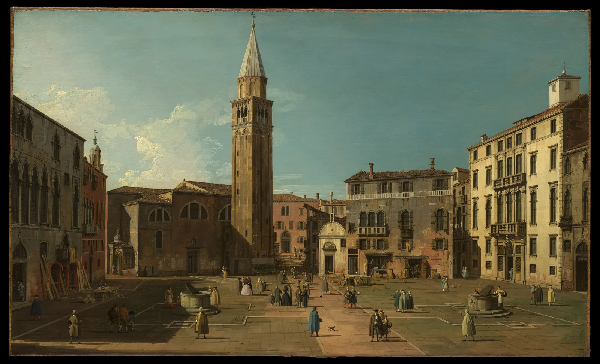

그림자 그리기
같은 골목을 정오와 오후 네 시에 사진으로 찍어 나란히 놓으면, 오후 사진 쪽이 훨씬 입체적으로 보인다. 건물은 그대로인데 땅에 길게 누운 그림자가 골목의 깊이와 건물의 높이를 대신 말해 주기 때문이다. 그림자는 물체가 빛을 가려 생긴 두 번째 그림이다. 그리고 이 두 번째 그림은 느낌이 아니라 기하학으로 정해진다. 빛이 어디에서 오는지만 정하면 그림자의 방향과 길이, 가장자리의 선명도까지 작도로 맞출 수 있다. 이 장은 해와 전등을 끌어 옮기며 그 작도를 익히고, 마지막에는 기하학대로 그린 그림자를 언제 줄이고 언제 생략해도 되는지도 본다.
- 광선, 물체의 한 점, 그 그림자가 한 직선 위에 있다는 원리로 그림자의 길이와 방향을 작도한다.
- 햇빛(평행광)의 그림자가 수평선 위의 한 소실점으로 모이고, 해가 화면과 나란하면 평행선으로 남는다는 것을 확인한다.
- 날짜·시각·위도로 해의 고도와 방위를 구하고, 처마·간판이 벽에 드리우는 그림자의 깊이를 계산한다.
- 전등(점광원)의 그림자가 광원의 발에서 퍼져 나가는 방식과, 광원보다 높은 물체에서 작도가 무너지는 이유를 안다.
- 본그림자와 반그림자를 구별하고, 광원의 크기와 거리로 그림자 가장자리의 선명도를 정한다.
그림자는 빛이 그린 두 번째 그림이다
드로잉에서 그림자는 두 종류다. 물체 자신의 표면 가운데 빛을 등진 쪽이 어두워진 것이 고유 그림자(Form shadow)이고, 물체가 빛을 가려 다른 표면(바닥, 벽, 옆 물체) 위에 떨어뜨린 어둠이 투영 그림자(Cast shadow)다. 고유 그림자와 밝은 면이 갈리는 선, 곧 명암 경계는 8장에서 구에 빛을 옮기며 보았다. 이 장은 투영 그림자를 다룬다. 고유 그림자는 표면의 방향이 정하고, 투영 그림자는 빛과 물체와 받는 면의 위치 관계가 정한다.
투영 그림자를 그리는 규칙은 하나뿐이다. 광원, 물체의 한 점, 그 점의 그림자는 한 직선 위에 있다. 빛은 곧게 나아가므로, 물체의 모서리를 스친 광선이 바닥에 닿는 곳이 그 모서리의 그림자다. 전등처럼 위치가 있는 광원이면 광원에서 바닥으로 수직선을 내린 점이 하나 더 필요하다. 이 점을 광원의 발(Foot of the light)이라고 부른다. 바닥 위의 그림자는 광원의 발에서 물체의 밑동을 지나는 직선 위에 놓인다. 그래서 그림자 끝 하나는 두 직선, 곧 광원에서 물체 꼭대기를 지나는 광선과 광원의 발에서 물체 밑동을 지나는 바닥선이 만나는 점이다.
ART.project, ART.shadowPoint)으로 계산한 좌표로 그렸다.가장 단순한 경우부터 본다. 땅에 수직으로 선 막대 하나를 옆에서 보면, 막대와 그림자와 광선이 직각삼각형을 이룬다. 이 그림자 삼각형(Shadow triangle)에서 광선이 땅과 이루는 각이 해의 고도(Altitude)다. 고도가 낮을수록 그림자는 길어진다.
아래에서 해를 호 위로 끌어 고도를 바꾼다. 막대의 높이를 바꿔도 그림자와 막대의 비율은 그대로라는 것, 그리고 해를 지평선 가까이 내리면 그림자가 종이 밖으로 달아나는 것을 본다.
그림자 삼각형
해가 높은 한낮에는 그림자가 발밑에 짧게 몰리고, 해가 낮은 아침과 저녁에는 길게 눕는다. 화가와 사진가가 해 질 녘을 좋아하는 이유 가운데 하나가 이것이다. 긴 그림자는 땅의 기복과 물체의 높이를 드러내고, 화면에 굵은 사선을 더한다. 반대로 고도가 아주 낮으면 그림자가 화면 전체를 덮어 형태가 그림자에 묻힌다. 그림자는 길수록 좋은 것이 아니라, 무엇을 보여 주려는지에 맞는 길이가 있다.
햇빛: 평행한 광선과 그림자 소실점
해는 너무 멀어서 지상의 한 장면에 닿는 광선들이 사실상 평행하다. 이런 빛을 평행광(Parallel light, Directional light)이라고 한다. 평행광 아래에서 땅에 선 막대들의 그림자는 모두 같은 방향, 같은 비율로 눕는다. 그런데 투시도 안에서는 평행선이 한 점으로 모인다(4장). 그러니 땅 위의 평행한 그림자들도 수평선 위의 한 점으로 모인다. 이 점이 그림자 소실점(Vanishing point of shadows)이다.
광선들 자체도 평행선 묶음이니 소실점이 있다. 해가 앞쪽 하늘에 보이면(역광) 광선의 소실점은 화면 속 해의 자리 그 자체다. 해가 등 뒤에 있으면(순광) 광선은 보는 사람 뒤에서 앞으로 내리꽂히고, 그 소실점은 수평선 아래에 생긴다. 이 점을 해의 반대점이라고도 부른다. 어느 경우든 작도는 같다. 그림자 소실점에서 밑동을 지나는 선, 광선 소실점에서 꼭대기를 지나는 선을 긋고, 두 선이 만나는 곳이 그림자 끝이다. 그리고 광선 소실점은 언제나 그림자 소실점의 바로 위나 바로 아래, 같은 세로선 위에 있다.
평행광 작도: 해를 끌어 그림자 소실점 찾기
ART.shadowPoint로 계산했다.)작도선이 계산한 그림자 끝에서 어긋나지 않고 만난다는 것은, 투시 작도와 실제 사영이 같은 기하학이라는 뜻이다. 실제로 그릴 때는 그림자 소실점 하나만 정하면 된다. 수평선 위에 점을 찍고, 그 점의 바로 위(역광) 또는 바로 아래(순광)에 광선 소실점을 정한다. 둘 사이가 멀수록 해가 높고 그림자가 짧다. 같은 화면 안의 모든 그림자는 이 두 점을 따른다. 한 그림자만 다른 점을 향하면, 보는 사람은 이유를 몰라도 무언가 어긋났다고 느낀다.
"해가 옆"의 경우는 실제 그림에서 자주 쓰인다. 그림자가 화면과 나란한 수평선이 되므로 작도가 가장 쉽고, 물체의 높이가 그림자 길이로 바로 읽힌다. 18세기 베네치아의 풍경 화가 카날레토의 광장 그림이 좋은 예다.

해의 고도와 방위: 시각을 그림자로 읽기
그림자 소실점을 아무 데나 찍어도 그림은 그럴듯해진다. 그런데 특정한 장소를 특정한 시각에 그리려면 해가 실제로 어디 있는지 알아야 한다. 해의 자리는 두 각으로 적는다. 땅에서 몇 도 올라왔는지가 고도, 북쪽에서 시계 방향으로 몇 도 돌았는지가 방위각(Azimuth)이다. 동쪽이 90°, 남쪽이 180°, 서쪽이 270°다. 땅 위의 그림자는 방위각의 정반대(180°를 더하거나 뺀 쪽)로 눕는다.
해의 고도는 그 장소의 위도 \(\varphi\), 그날 해의 적위(Declination) \(\delta\), 그리고 정오에서 얼마나 지났는지를 나타내는 시간각 \(H\)로 정해진다. 적위는 해가 하늘의 적도에서 남북으로 얼마나 비켜 있는지를 나타내며, 춘분·추분에 0°, 하지에 약 +23.4°, 동지에 약 −23.4°다. 시간각은 태양이 남중하는 순간 0°이고 한 시간에 15°씩 커진다.
아래 판은 서울에 세운 1 m 막대를 위에서 내려다본 것이다. 시각을 옮기며 그림자의 방향과 길이를 보고, 날짜를 바꿔 계절마다 해의 길이 어떻게 다른지 본다.
서울의 해시계: 날짜와 시각으로 그림자 정하기
자취를 보면 그림자 끝은 하루 동안 곡선을 그린다. 춘분과 추분에는 거의 직선(정동서 방향)이고, 여름과 겨울에는 막대 쪽 또는 반대쪽으로 휜다. 해시계의 눈금이 이 원리로 만들어진다. 그림을 그리는 사람에게 중요한 것은 두 가지다. 첫째, 해는 생각보다 빨리 움직인다. 4월 17일 오후 4시 무렵에는 한 시간에 방위각이 약 11°, 고도가 약 11° 변한다. 둘째, 같은 시각이라도 계절에 따라 그림자 길이가 몇 배씩 다르다. 오후 4시라는 말만으로는 그림자가 정해지지 않는다.
벽에 떨어지는 그림자: 처마와 간판
건물을 그릴 때 가장 눈에 띄는 그림자는 땅이 아니라 벽에 생긴다. 처마, 차양, 창틀, 돌출 간판처럼 벽에서 튀어나온 것들이 벽 위에 그림자를 드리운다. 이 그림자는 벽에서 튀어나온 깊이와 해의 방향만으로 정해진다. 벽과 마주 선 방향(벽의 바깥쪽 법선)과 해의 방위각이 이루는 차이를 \(\gamma\)라고 하면, 깊이 \(p\)만큼 튀어나온 처마의 그림자는 벽에서 \(p\,\tan\alpha/\cos\gamma\)만큼 아래로 내려온다. 벽의 단면에서 잰 이 광선의 기울기를 프로필 각(Profile angle)이라고 부른다. 돌출 간판의 그림자는 아래로 같은 만큼, 옆으로 \(p\,\tan\gamma\)만큼 비켜난다.
아래 입면도(건물을 정면에서 납작하게 본 그림)에서 해의 고도와 방위 차이를 바꿔 처마와 간판의 그림자를 본다. 방위 차이를 ±90° 너머로 밀면 어떻게 되는지도 확인한다.
입면도 위의 처마와 간판 그림자
γ가 커질수록 처마 그림자가 깊어진다는 점은 직관과 반대일 수 있다. 해가 벽을 비스듬히 스치면 처마 아래로 파고드는 광선의 단면 기울기(프로필 각)가 가팔라지기 때문이다. 그래서 늦은 오후의 비낀 햇빛이 처마와 창틀 아래에 깊은 띠를 만들고, 건물의 요철을 가장 또렷하게 드러낸다. γ가 90°에 이르면 벽은 그림자 띠로 가득 차는 대신 통째로 어두워진다. 벽 자체가 빛을 등지기 때문이다.
전등: 한 점에서 퍼지는 그림자
밤의 가로등이나 방 안의 전등은 해와 달리 가까이 있다. 광선이 한 점에서 사방으로 퍼지므로 이런 광원을 점광원(Point light)으로 다룬다. 점광원 아래의 그림자는 평행하지 않다. 모든 그림자가 광원의 발에서 바큇살처럼 퍼져 나가고, 광원에서 멀리 있는 물체일수록 그림자가 길다. 높이 \(H\)인 광원의 발에서 거리 \(d\)만큼 떨어진 높이 \(h\)의 막대는 길이 \(L = h\,d/(H-h)\)의 그림자를 만든다. 물체가 광원 높이에 가까워질수록 분모가 0으로 가며 그림자가 폭발적으로 길어진다.
아래에서 가로등의 발을 끌어 옮기고 등의 높이를 바꾼다. "해"로 바꾸면 같은 방향에서 오는 평행광과 나란히 비교할 수 있다.
점광원의 그림자: 광원의 발에서 퍼진다
두 광원의 차이를 한 문장으로 줄이면, 햇빛의 그림자는 수평선 위의 점(그림자 소실점)으로 모이고, 전등의 그림자는 땅 위의 점(광원의 발)에서 퍼진다. 그림자 소실점은 무한히 먼 광원의 발이라고 생각해도 된다. 그래서 밤 장면에서 가로등 그림자를 낮의 그림자처럼 나란히 그리면, 빛이 어디에 있는지 읽히지 않는다. 한 장면에 가로등이 둘이면 그림자도 물체마다 두 개씩, 서로 다른 발에서 퍼진다. 겹친 곳은 더 짙다.
등이 물체보다 낮을 때 작도가 무너지는 것도 기억해 둘 만하다. 바닥에 놓인 촛불 옆의 의자, 무대 바닥 조명 앞의 배우처럼 광원이 낮으면 그림자는 땅에서 끝나지 않고 벽과 천장으로 거대하게 올라간다. 공포 영화와 연극이 이 효과를 즐겨 쓰는 이유다.
가장자리: 본그림자와 반그림자
지금까지는 광원을 크기 없는 점으로 생각했다. 실제 광원은 크기가 있다. 광원의 한쪽 끝에서 보면 가려진 자리가 다른 쪽 끝에서는 보일 수 있다. 그래서 그림자 안에는 광원 전체가 가려진 짙은 부분인 본그림자(Umbra)와 광원의 일부만 가려진 옅은 띠인 반그림자(Penumbra)가 생긴다. 반그림자의 폭이 곧 그림자 가장자리의 흐림이다.
닮은 삼각형에서 반그림자 폭은 \(w = D\,s/a\)다. 햇빛은 \(D/a\)가 해의 겉보기 지름(약 0.53°, 곧 0.0093)으로 고정되므로 \(w \approx 0.0093\,s\)다. 모서리에서 1 m 떨어진 곳의 그림자는 가장자리가 약 1 cm 흐리고, 10 m 떨어진 곳은 약 9 cm 흐리다. 같은 막대의 그림자라도 밑동 쪽은 날카롭고 끝 쪽은 부드러운 이유다. 아래에서 가리는 판의 모서리를 끌어 옮기고 광원의 종류와 크기를 바꿔 본다.
그림자 가장자리의 선명도
그림자 가장자리의 선명도는 드로잉에서 생각보다 큰 정보다. 맑은 날의 그림자는 날카롭고 흐린 날의 그림자는 번진다. 물체가 바닥에 닿은 곳의 그림자는 가장 짙고 날카로우며, 멀어질수록 옅고 부드러워진다. 이 마지막 성질을 빼먹으면 물체가 바닥에 붙어 있지 않고 떠 보인다. 8장의 접촉 그림자가 바로 이 자리다. 펜 드로잉에서는 가장자리를 선 하나로 끊는 대신, 해칭 끝을 들쭉날쭉하게 풀거나 간격을 성기게 벌려 반그림자를 만든다.
그림자를 그릴 것인가
그림자를 기하학대로 정확히 그리는 것과, 그림자를 그림에 넣는 것은 다른 문제다. 그림자는 물체를 땅에 붙이고, 빛의 방향과 시각을 알려 주고, 화면에 큰 어둠의 덩어리를 더한다. 아래의 두 그림은 같은 정물이다. 경계선을 끌어 그림자가 있는 쪽과 없는 쪽을 비교한다.
그림자가 없는 쪽에서 상자와 공은 바닥 위에 떠 있는 것처럼 보이고, 공이 상자보다 앞에 있는지 뒤에 있는지도 덜 분명하다. 그림자가 있는 쪽에서는 공이 바닥에 닿아 있고, 상자 그림자가 공 쪽으로 누워 둘의 거리를 알려 준다. 공의 아랫부분에 진 고유 그림자와 바닥의 투영 그림자가 만나는 접촉점이 가장 짙다.
그렇다고 모든 그림에 투영 그림자가 필요한 것은 아니다. 동아시아의 전통 회화는 투영 그림자를 거의 그리지 않았다. 산수화와 화조화는 한 순간의 빛보다 대상의 오래된 모습과 기운을 그리려 했고, 공간은 먹의 농담과 여백으로 만들었다(10장). 17~18세기 이후 서양 화법이 중국을 거쳐 조선에 소개되며 얼굴이나 건물에 음영을 더한 그림이 나타나지만, 땅에 떨어진 그림자까지 그린 예는 여전히 드물다. 그림자가 없다고 공간이 없는 것이 아니다. 그 그림들은 다른 단서로 공간을 세운다.
서양 회화 안에서도 그림자는 늘 조정의 대상이었다. 실제보다 짧게 줄여 형태를 가리지 않게 하거나, 옅게 눌러 주인공보다 앞서지 않게 하거나, 여러 광원의 그림자 가운데 하나만 남기는 일이 흔하다. 20세기 초 조르조 데 키리코의 광장 그림들은 거꾸로, 길이와 방향이 서로 맞지 않는 긴 그림자로 불안한 꿈 같은 공간을 만들었다고 흔히 해석된다. 규칙을 아는 사람이 일부러 어긋나게 그린 그림자는 실수가 아니라 표현이다.
골목 모퉁이의 하루
지금까지의 원리를 한 장면에 모은다. 골목 모퉁이에 2층 건물이 서 있고, 정면은 남서쪽(방위각 225°), 옆면은 남동쪽(135°)을 향한다. 처마는 벽에서 0.6 m 튀어나와 있고, 정면에는 돌출 간판이, 모퉁이 앞에는 가로등이 있다. 날짜는 4월 17일로 두었다. 시각을 옮겨 해를 움직이고, 건물의 방향을 돌려 보고, 밤으로 바꿔 가로등의 그림자를 본다.
골목 모퉁이 그림자 무대
16시와 14시를 비교하면, 그림자의 양보다 방향이 장면을 바꾼다는 것이 보인다. 그림자가 보는 사람 쪽이나 옆으로 누우면 땅의 넓이와 건물의 높이가 함께 읽히고, 그림자가 건물 뒤로 숨으면 같은 건물이 무대 배경처럼 납작해진다. 정면과 옆면 가운데 한쪽만 빛을 받는 시각은 두 면의 명도 차이로 모서리를 세운다. 이것이 5장의 2점 투시 모서리를 가장 힘 있게 보여 주는 빛이다.
서윤의 작업 노트
오후 네 시의 서점
서점 외관의 2점 투시 구조선은 서 있었다. 남은 것은 빛이었다. 서윤은 처음에 그림자를 아무렇게나 넣었다. 처마 아래를 대충 어둡게 칠하고, 간판 그림자는 바로 아래로, 땅에는 짧은 그림자를 왼쪽으로 붙였다. 토요일 모임에서 그림을 본 한도경이 물었다. "몇 시야?" 서윤은 대답하지 못했다. "처마는 정오고, 땅은 아침이네. 해가 둘이야."
다음 주 토요일, 4월 17일 오후에 서윤은 서점 앞에서 직접 확인했다. 휴대폰 나침반으로 재 보니 서점 정면은 남서쪽(방위각 약 225°), 골목 쪽 옆면은 남동쪽(135°)을 향했다. 이 책의 모델로 계산하면 이날 서울의 해는 14시에 고도 56.2°, 방위각 221.6°로 정면을 거의 똑바로 비춘다. 땅 그림자는 높이의 0.67배로 짧고 북동쪽, 곧 건물 뒤로 눕는다. 16시에는 고도 36.0°, 방위각 253.6°다. 정면과의 방위 차이가 28.6°로 비스듬히 밝고, 옆면은 방위 차이가 118.6°라 그늘에 든다. 땅 그림자는 높이의 1.38배, 방위 73.6°(동북동)로 보는 사람의 오른쪽 뒤로 눕는다. 17시에는 고도 24.4°로 그림자가 높이의 2.21배가 되어 골목 바닥을 거의 덮는다.
처마는 벽에서 0.6 m 튀어나와 있었다. 16시의 프로필 각은 39.6°라서 처마 그림자는 벽에서 0.6 × tan 36.0° ÷ cos 28.6° ≈ 0.50 m 내려온다. 벽에서 0.6 m 튀어나온 돌출 간판의 그림자는 그만큼 아래로, 그리고 오른쪽으로 0.6 × tan 28.6° ≈ 0.33 m 비켜난다. 16시 정각에 실제 간판 그림자 끝을 분필로 표시해 보니 계산과 손 한 뼘 안쪽으로 맞았다. 가장자리도 확인했다. 처마 그림자의 반그림자는 0.84 m × 0.0093 ≈ 8 mm라서 펜으로는 날카로운 경계다. 지붕(높이 6.5 m) 그림자가 땅에 닿는 끝은 광선 길이가 약 11 m라 반그림자가 약 10 cm다.
서윤의 선택은 16시였다. 정면만 빛을 받아 모서리가 서고, 그림자가 오른쪽 뒤로 누워 골목의 깊이를 보여 주며, 그림자가 아직 길 전체를 덮지는 않는다. 도경은 하나를 덧붙였다. "현장에서는 두 시간이면 해가 20도 넘게 돌아. 그림자는 처음 30분 안에 연필로 정해 두고, 그다음엔 실제 그림자를 보지 마." 밤 장면도 시험했다. 골목 계단 위의 가로등(높이 약 4.5 m)에서 2 m 떨어진 난간 기둥(높이 0.9 m)의 그림자는 0.9 × 2 ÷ 3.6 = 0.5 m, 4 m 떨어진 기둥은 1.0 m로, 등의 발에서 바큇살처럼 퍼졌다. 등갓의 지름을 0.3 m로 잡으면 기둥 꼭대기 그림자의 반그림자는 0.3 × 0.9 ÷ 3.6 ≈ 7.5 cm로, 낮의 처마 그림자보다 열 배 가까이 부드럽다.
핵심 정리
- 고유 그림자는 표면의 방향이, 투영 그림자는 광원·물체·받는 면의 위치가 정한다. 광원, 물체의 한 점, 그 그림자는 한 직선 위에 있다.
- 평평한 땅에 선 막대의 그림자 길이는 \(h/\tan\alpha\)다. 같은 시각, 같은 장소의 그림자는 물체 높이에 정비례하고, 고도가 0°에 가까워지면 끝없이 길어진다.
- 햇빛은 평행광이라 땅 위의 그림자가 수평선 위의 그림자 소실점으로 모인다. 광선의 소실점은 그 바로 위(해가 앞)나 바로 아래(해가 뒤)에 있고, 해가 화면과 나란하면 그림자도 평행선으로 남는다.
- 해의 고도와 방위는 위도·날짜·시각으로 정해진다. 서울의 4월 17일 16시에는 고도 36.0°, 방위각 253.6°다. 해는 한 시간에 10° 넘게 움직이므로 현장에서는 그림자를 먼저 정해 둔다.
- 벽에서 \(p\)만큼 튀어나온 처마의 그림자는 \(p\tan\alpha/\cos\gamma\)만큼 내려온다. 해가 벽을 비스듬히 스칠수록 깊어지고, 방위 차이가 90°를 넘으면 벽 전체가 고유 그림자가 된다.
- 점광원의 그림자는 광원의 발에서 퍼지고, 물체가 광원 높이에 가까워지면 끝없이 길어진다. 반그림자 폭은 \(D\,s/a\)라서 광원이 크거나 가리는 모서리가 받는 면에서 멀수록 가장자리가 흐리다.
- 그림자를 정확히 작도하는 것과 그림에 넣는 것은 다른 선택이다. 동아시아 회화처럼 투영 그림자 없이 공간을 세우는 전통도 있고, 일부러 어긋난 그림자로 불안을 만드는 그림도 있다.
확인 퀴즈
1. 해의 고도가 30°일 때 높이 2 m인 수직 막대의 그림자 길이에 가장 가까운 것은?(평평한 땅)
2. 해가 보는 사람의 등 뒤에서 비치는 맑은 날의 풍경을 투시로 그린다. 땅 위 그림자들의 소실점과 광선의 소실점에 대한 설명으로 옳은 것은?
3. 남서향 벽에 깊이 0.6 m의 처마가 있다. 같은 고도의 해가 벽을 정면으로 비출 때(방위 차이 0°)와 비스듬히 비출 때(방위 차이 60°), 처마 그림자의 깊이는 어떻게 되는가?
4. 같은 막대의 그림자에서 밑동 쪽 가장자리는 날카롭고 끝 쪽 가장자리는 흐리다. 가장 알맞은 설명은?